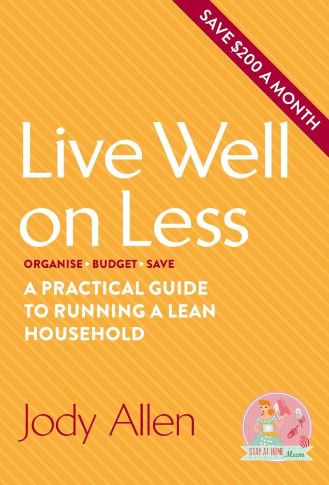

|  | Live Well On Less |
$24.99 now $19.00 |
DescriptionLive lean, not mean!
|
Product DetailsISBN: 9780751561746 |
The AuthorJody Allen was made redundant in 2011 while on maternity leave and pregnant with her second child, born 12 months after the first baby. She started her website, Stay at Home Mum, to share her money-saving experiences while her family lived on one wage and it has since become Australia's biggest mothers' network. Jody now connects with hundreds of thousands of women and has created a successful business. She started shopping, cooking and freezing in bulk to save time and money while still giving her family delicious nutritious meals. Jody lives in Gympie, Queensland, with her husband and two boys. |